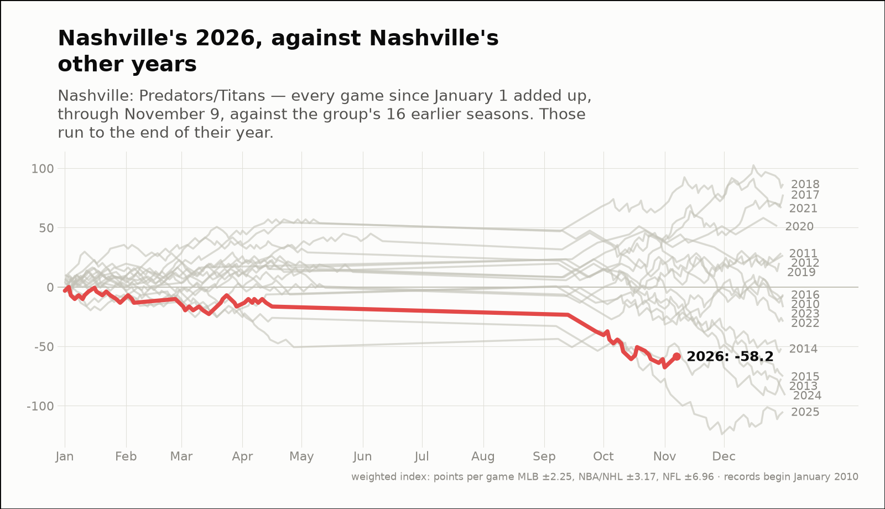
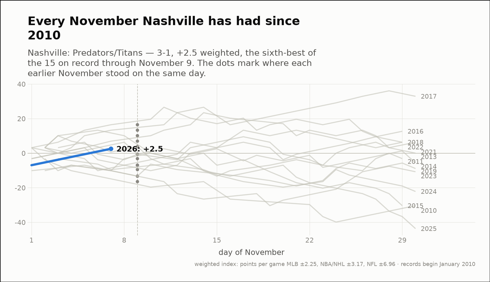
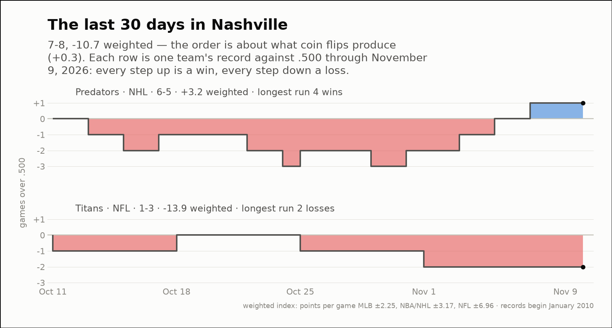

City of the day — Nashville
Nashville: Predators/Titans
- 2026 so far
- 29-39, -58.2 weighted over 68 games; longest run 6 straight losses
- Order of results
- about as clumped as coin flips (-0.4)
- Earlier seasons (full-year weighted)
- 2010 -7.6, 2011 +28.5, 2012 +26.6, 2013 -77.2, 2014 -51.8, 2015 -75.3, 2016 -6.3, 2017 +77.9, 2018 +86.7, 2019 +20.2, 2020 +51.2, 2021 +66.4, 2022 -29.1, 2023 -17.0, 2024 -91.1, 2025 -105.0
- Last 30 days
- 7-8, -10.7 weighted; longest run 3 straight losses
- Window opens
- October 11, 2026
- November 2026 through day 9
- 3-1, +2.5 weighted — the sixth-best of the 15 on record
- Same November in earlier years (same stretch)
- 2010 -9.5, 2011 -0.6, 2013 +10.1, 2014 -0.6, 2015 -3.2, 2016 -7.0, 2017 +13.3, 2018 +16.5, 2019 -13.3, 2021 +7.0, 2022 -7.0, 2023 -13.3, 2024 +3.8, 2025 -16.5
| Team | Last 30 days | Weighted | Longest run |
|---|---|---|---|
| Predators | 6-5 | +3.2 | 4 straight wins |
| Titans | 1-3 | -13.9 | 2 straight losses |


